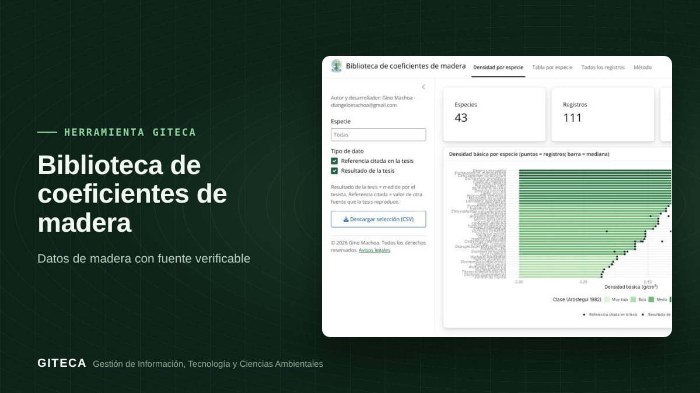

Densidad y propiedades de 43 maderas amazónicas, cada dato con su tesis
Densidad básica, contracciones, relación T/R, MOE y MOR de 43 especies, extraídos de 23 tesis de la FCF-UNAP y revisados a mano.
Abrir la app ↗Gratis y en el navegador.

¿De dónde sacas la densidad básica de la madera para calcular biomasa, carbono o peso de carga?
Muchos cálculos forestales dependen de un coeficiente que casi nunca está a la mano: la densidad básica de la especie. La Biblioteca reúne 111 valores de 43 especies amazónicas extraídos de tesis de la UNAP, con el enlace a cada fuente.
Antes y ahora
El proceso de siempre
- Buscar la densidad en tablas antiguas o en bases internacionales.
- No saber si el valor viene de un ensayo local o de una cita.
- Copiar el valor sin poder verificar la fuente.
Con la herramienta
- Buscas la especie.
- Ves cada valor indicando si es resultado de la tesis o una referencia citada.
- Abres la tesis original con un clic.
Tiempos de referencia estimados por el equipo GITECA; varían según el tamaño del área y la experiencia del usuario.
En la práctica: La biblioteca reúne 111 valores de 43 especies, de 23 tesis.
Qué hace
- Densidad básica, contracciones, relación T/R, MOE y MOR.
- Mediana por especie, que usa la Calculadora de inventarios para estimar la biomasa.
- Origen de cada dato (resultado de la tesis o referencia citada) y enlace a la fuente.
Para quién es
Empieza en 3 pasos
- Abre la app (la primera carga tarda 1 a 2 minutos).
- Busca la especie o la propiedad.
- Revisa la fuente y descarga los datos.
Biblioteca de coeficientes de maderaGratis y en el navegador.
Abrir la app ↗
Ten en cuenta: La cobertura es parcial: muchas tesis tienen sus resultados en tablas escaneadas que aún no se han extraído. ¿Necesitas adaptarla a tu proyecto o capacitar a tu equipo? Escríbenos.